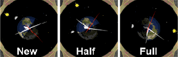
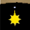
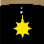

Alexandria

Alexandria, named for the home of the ancient Greek astronomer Ptolemy, shows a geocentric representation of the positions of the Sun and the Moon relative to the Earth.
The Earth is shown from a co-rotating perspective above the north pole with the watch's current longitude at the top.
The Sun hand indicates the current position of the Sun relative to the Earth's surface.
The Moon is shown at the appropriate angle and with its terminator in the right orientation.
The position of the Earth's terminator (the boundary between night and day) is adjusted for the seasons.

In Set mode, you can drag the Sun hand or use the pushers to animate the display.
If you imagine yourself standing on the Earth and observe the relative positions of the Sun and Moon over the course of a month you can see how the Moon's phases are produced.
If you continue for a year you can see the long polar days and nights and the (apparent, geocentric-perspective) motion of the Sun with respect to the stars.
The upper pusher advances by a day, the lower one by an hour.
The (fictitious) starry background rotates once a year relative to the Sun. Though Alexandria has no date windows the approximate times of the solstices, equinoxes, and
apsides for dates within a few decades of the present are indicated by the position of the Sun relative to some tiny star patterns on the front side:
for dates within a few decades of the present are indicated by the position of the Sun relative to some tiny star patterns on the front side:
| Date | Event | Note |
|---|
|  | Mar 20 | Equinox | beginning of northern spring |
|  | Jun 21 | Solstice | beginning of northern summer |
| Sep 22 | Equinox | beginning of northern fall |
| Dec 21 | Solstice | beginning of northern winter |
| Jan 4 | Perihelion | Earth closest to the Sun |
| Jul 4 | Aphelion | Earth farthest from the Sun |
Of course, this display is wildly out of scale!
The distance to the Moon is roughly 30 Earth diameters, to the Sun more than 7000.
On the back,
the Earth is shown from below the south pole and the rotations are correspondingly reversed.